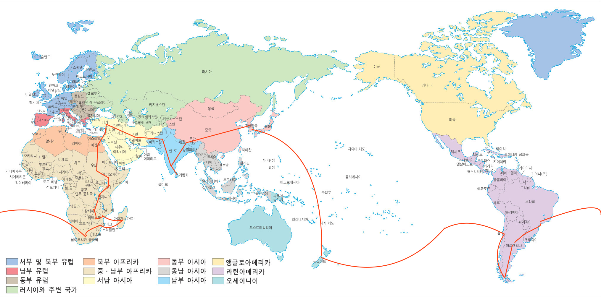

여행 계획을 간략하게 짜보다.
2017년 02월 26일
휴직 20일째
여행 계획을 간략하게 짜보다.
오늘은 집에가서 이사짐을 정리하지 말고 하루 쉬기로 했다. 집 문제 때문에 정신적으로 지쳐서 하루는 쉬어야겠다는 생각을 했다. (바닥도 좀더 말릴겸..) 오늘은 집 정리 계획도 세워보고, 한동안 포기 했던 블로그도 다시 시작 하기로 했다. 그리고 대충 여행 어디로 갈지 정해보기로 했다. 될지는 모르겠지만 어디 가고 싶은지 생각나는 대로 쭉 연결해봤다. 그리고 그 연결대로 이동이 가능한지 조사를 하려다가 생각보다 오래걸려서 나중으로 미뤄졌다. 그리고 해당 나라 안에서도 관광지나 명소를 검색해서 정리해놔야 한다. 사실 어디에 뭐가 있는지 모르니까 조사하는데 시간이 꽤 걸릴것 같다. 이사 정리 다하고 시작하면 계속 못할것 같아서 바쁘더라도 간략하게나마 시작해 놓는게 좋을 것 같았다.
아무리 잘만든 도시나 건축물이라고 하더라도 대자연이 만든 장엄한 스케일에 비하면 보잘것 없다. 나는 그래서 여행지도 현대화된 도시 보다는 대자연이 많은 곳을 선호한다. 이번 여행에 유럽과 북미는 포함되지 않았다. 나중에 언제라도 쉽게 갈 수 있는곳이기 때문이다. 중동 아시아 -> 아프리카 -> 남미 -> 오세아니아 순으로 지구를 한바퀴 돌고 고향으로 돌아오는 코스를 짜 봤다. 원래 몽골부터 가려고 했는데 몽골은 겨울에가면 얼어죽는다고 여름에 가야한다고 해서 출발지를 네팔로 급 변경했다. 아래와 같이 경로를 그려봤다. 10개월이나 여행 하는데도 지구상의 못가보는 장소가 이렇게나 많다는 사실이 새삼 놀랍다. 세계 여행은 평생 동안 해야 하는 것이로구나! (남은 여생을 여행이나 하며 살고 싶다)

대한민국 -> 네팔 -> 인도 동부 -> 스리랑카 -> 인도 서부 -> 파키스탄 -> 이란 -> 터키 -> 레바논 -> 요르단 -> 이스라엘 -> 이집트 -> 수단 -> 에티오피아 -> 케냐 -> 탄자니아 -> 잠비아 -> 짐바브웨 -> 모잠비크 -> 마다가스카르 -> 모잠비크 -> 남아프리카 공화국 -> 상파울루 -> 아르헨티나 -> 칠레 -> 이스터섬 -> 뉴질랜드 -> 대한민국
막상 짜보니 여행 계획하는데 생각보다 오래걸릴것 같다. 집정리를 빨리 마쳐야 하는데 집정리하는데도 생각보다 오래걸릴것 같다. 집정리 마치고 빈집을 Airbnb 돌릴 수 있게 만들어 놓아야 하는데 할게 많다. 마음이 조급하다!!!